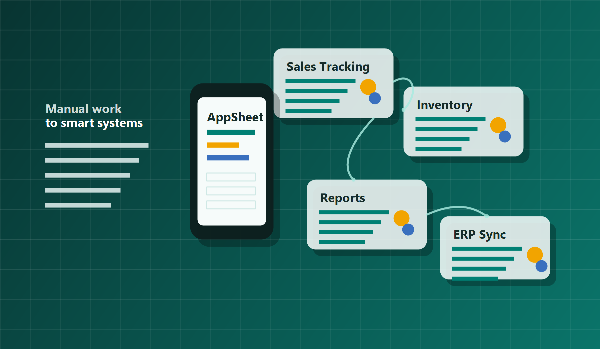

AppSheet Custom Applications
Purpose-built mobile and web apps for sales tracking, order processing, inventory, approvals, and field operations.
Digital transformation, made practical
We convert on-ground business challenges into simple digital systems that teams actually use.
Built for everyday clarity.
Practical systems designed around real teams.

Technology consulting built around everyday business needs.
From your first process map to the final rollout, we build the digital layer your business needs to move with confidence. Karexa Solutions designs and implements practical workflows using no-code platforms like AppSheet, ERP consultation through trusted third-party integrations, data reporting systems, and process automation. Our focus is usability, measurable impact, and adoption by non-technical teams.
From your first process map to the final rollout, we build practical digital systems for your business.
Purpose-built mobile and web apps for sales tracking, order processing, inventory, approvals, and field operations.
Automated workflows that reduce repeated manual work, improve handoffs, and keep teams aligned with timely updates.
Guidance for ERP implementation, integration planning, and practical rollout support through trusted third-party tools.
Clean, accessible dashboards and reports that improve visibility across sales, customers, inventory, and operations.
Review of current processes, gap identification, and streamlined digital flows that help teams work with less friction.
We study your current process, pain points, data flow, users, and operational constraints.
We map a practical solution that keeps the system simple, scalable, and easy for teams to adopt.
We configure apps, workflows, integrations, and dashboards with clear testing and rollout support.
We refine the system using feedback, reporting insights, and changing business needs.
We empower businesses by turning manual processes into efficient digital systems that help teams focus on meaningful work.
A trusted partner for teams ready to improve how work gets done.
Share your current process and goals. Karexa Solutions can help identify the right digital system, build it practically, and support your team through adoption.